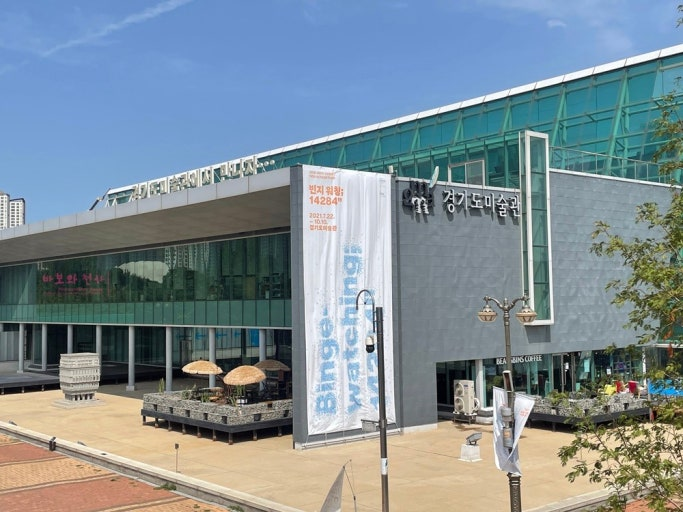

소개
경기도미술관은 드넓은 화랑호수를 등지고 서 있어 경관이 일품인 미술관입니다. 호수와 미술관의 모습부터 시작해서 전시 중인 작가들의 작품에 이르기까지, 모든 장면이 치열한 삶에 잠시 쉬어 가는 시간을 주죠.
생생한 체험 : 경기도미술관은 입장하는 순간부터 나오는 순간까지 작품과 함께합니다. 마치 내가 거대한 작품 속에 들어와 있는 것 같이 말이죠.
신인·중견 작가의 작품 : 거장들의 작품들을 전시하는 대형 미술관과 달리, 경기도미술관은 신인·중견 작가들의 작품을 전시합니다. 그렇기에 작가의 생각이 오히려 관람객에게 더 와닿아요.
다양한 콘텐츠 : 경기도미술관은 엄청나게 넓은 스펙트럼의 콘텐츠를 제공합니다. 작품 감상뿐만 아니라 작가와의 토크, 작품과 연계한 퍼포먼스, 관람객이 직접 참여하는 퍼포먼스까지, 정말 다양하죠?
진행 중인 전시/행사
- 1. 「작은 것으로부터」 : 경기도미술관이 경기도를 기반으로 활동하는 중견 작가들을 조명하기 위해 매년 진행하는 "경기작가집중조명"이 올해로 4주년을 맞았습니다. 이번에는 사소한 인식에서 출발하는 세상을 향한 시선이 주제라고 하네요.
- 2. 「비(飛)물질: 표현과 생각 사이의 틈」 : "회화"와 "조각"이라는 전통적 매체를 탈피한 작품들의 특별전입니다. 더불어서, 관객이 수동적이게 되는 일반적인 전시 방법을 버리고 관객이 능동적으로 퍼포먼스에 참가하는 새로운 시도를 취하고 있어 신선한 충격을 자아냅니다.
- 3. 「드림하우스」 : 모든 전시가 밝고 희망차지는 않습니다. 「드림하우스」는 우리에게 우리네 삶의 방식이 과연 옳은가에 대한 질문을 던집니다. 관람객은 작품들을 보며 자신을 돌아보는, 철학적인 사색에 빠지게 되죠.
경기도미술관 가는 길
주소: 경기 안산시 단원구 동산로 268
자가용 이용 시: 미술관 바로 앞에 공영주차장이 마련되어 있어 주차하기에 매우 편리합니다. 전기차 전용 주차구역과 충전 스테이션도 설치되어 있으니 안심하세요!
대중교통 이용 시: 4호선 초지역에서 도보로 10분이면 도착할 정도로 가까워요.
미술관은 언제나 삶의 여유를 갖게 해 주죠. 이번 주말, 경기도미술관에 방문해 마음의 짐을 내려놓고 작품을 감상하며 힐링하는 시간을 가져보는 건 어떨까요?
← 관광지 목록으로 돌아가기